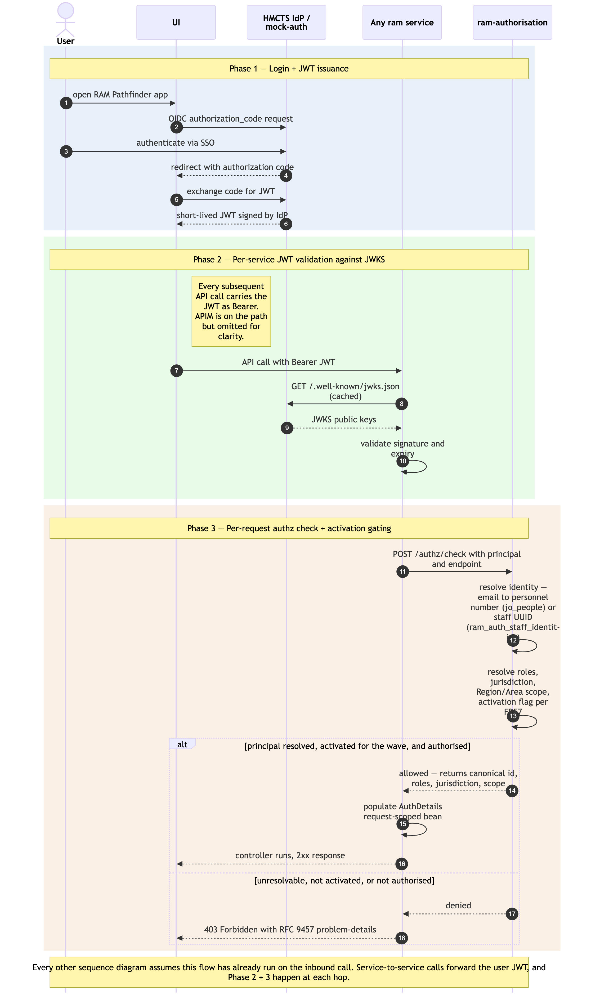

User authentication + per-request authorisation
Sequence diagram of the cross-cutting authentication and per-request authorisation flow that underpins every user-initiated interaction in RAM Pathfinder. A user authenticates once at the HMCTS IdP (or ram-mock-auth in non-prod); the issued JWT is then forwarded by the UI on every subsequent API call. Each backend service's custom JWTFilter validates the token against the issuer's JWKS endpoint and asks ram-authorisation to resolve the principal's identity and scope before the controller is allowed to run. Per the restructured D9 (2026-06-10), identity resolution is two-population: a JOH user's IdP email is looked up against jo_people to resolve the personnel number; an HMCTS admin-staff user's email is looked up against ram_auth_staff_identities to resolve the RAM-assigned UUID. The authz result carries roles + jurisdiction + Region/Area scope + the (jurisdiction, region) activation flag (FR57).
This is the cross-cutting flow that the other sequence diagrams (./absence-to-reconciliation.md, ./payment-batch-flow.md, ./joh-onboarding-and-sitting-generation.md, ./salaried-sitting-confirmation.md, ./itinerary-federated-read.md, ./mi-feed-and-reports-consumption.md, ./admin-maintenance-flows.md) explicitly omit for clarity. Read this diagram once; treat it as implicit on every API call shown in the others.
Three phases: (1) login + JWT issuance; (2) per-service JWT validation against JWKS; (3) per-request authz/check resolving identity (two-population) + roles + jurisdiction + scope + activation flag.
Not in this diagram
- Service-principal authentication for batch components —
ram-payment-batchuses OAuthclient_credentialsrather than the human SSO flow. See./payment-batch-flow.mdPhase 1. - Mock-auth internal mechanics (signing keys, token issuance, JWKS publication) — implementation detail. The mock-auth surface is OIDC-conformant; how it produces tokens is out of scope here.
- Token refresh / expiry handling in the UI — standard OIDC behaviour; not RAM Pathfinder-specific.
- Sign-out — clears the local session; not a server-side flow worth diagramming.
Cross-cutting steps omitted for clarity
- All UI → service calls flow through Azure API Management. APIM is omitted from the arrows below; assume every UI → service arrow passes through it (rate-limit policies, header injection,
/actuator/*restriction). - The two UIs (
ram-uiandram-admin-ui) follow the same auth pattern. The diagram uses "UI" generically.

Source: ./user-authentication-and-authorisation.mmd (Mermaid). Regenerate with mmdc -i user-authentication-and-authorisation.mmd -o user-authentication-and-authorisation.png -w 2400 -s 2 --backgroundColor white.
Phase summary
| Phase | Driver | Architectural rule | Outcome |
|---|---|---|---|
| 1 — Login + JWT issuance | User | OIDC authorization_code against HMCTS IdP (mock-auth in non-prod) |
UI holds a short-lived JWT for the session |
| 2 — Per-service JWT validation | Any backend service | Custom JWTFilter validates JWT signature against issuer's JWKS endpoint (cached per service) |
Token integrity + expiry verified before any controller logic runs |
| 3 — Per-request authz check | Any backend service | JWTFilter calls ram-authorisation POST /authz/check; resolves IdP email → canonical identifier (personnel number via jo_people for JOHs; RAM UUID via ram_auth_staff_identities for admin staff) → roles + jurisdiction + Region/Area scope + ram_auth_user_activation_flags (FR57); populates request-scoped AuthDetails bean |
Controller method invoked with authorised principal in scope; or 403 if unresolvable or not active for the (jurisdiction, region) |
Where to find more detail
| Detail | Location |
|---|---|
| Authentication & Security model (JWT propagation pattern, JWKS validation, mock-auth in non-prod, HMCTS IdP in production) | ../../architecture.md → Step 4 Authentication & Security |
JWTFilter per-service implementation pattern and AuthDetails request-scoped bean |
../starter-template.md → Per-service RAM Pathfinder Conventions; ../repo-structure.md per-service config/JWTFilter.java, config/AuthDetails.java |
Authorisation tables (ram_auth_users, ram_auth_staff_identities, ram_auth_roles, ram_auth_user_roles, ram_auth_user_region_scopes, ram_auth_user_activation_flags) + the jo_people identity lookup |
../data-tables.md |
| FR1, FR2, FR3 (Identity & Authorisation) and NFR12 (revised v2.6), NFR13 | PRD FR1–FR3, NFR12, NFR13 |
| Per-(jurisdiction, region) phased activation (FR57) and the wave-cutover semantics it enforces | PRD FR57; ../../architecture.md → Step 4 Deployment topology |
| Mock-auth scope and production-issuer open question | ../gaps.md G1.1, G1.2, G7.1 |
Two-UI repo split (ram-admin-ui post-MVP1; same auth pattern) |
../../architecture.md → Step 4 Frontend Architecture — v2.10 / D10 |
D10 (2026-05-15) — admin UI is post-MVP; MVP admin operations are DBA-via-SQL per operational runbooks.↩︎
Source: _bmad-output/planning-artifacts/architecture/sequence-diagrams/user-authentication-and-authorisation.md